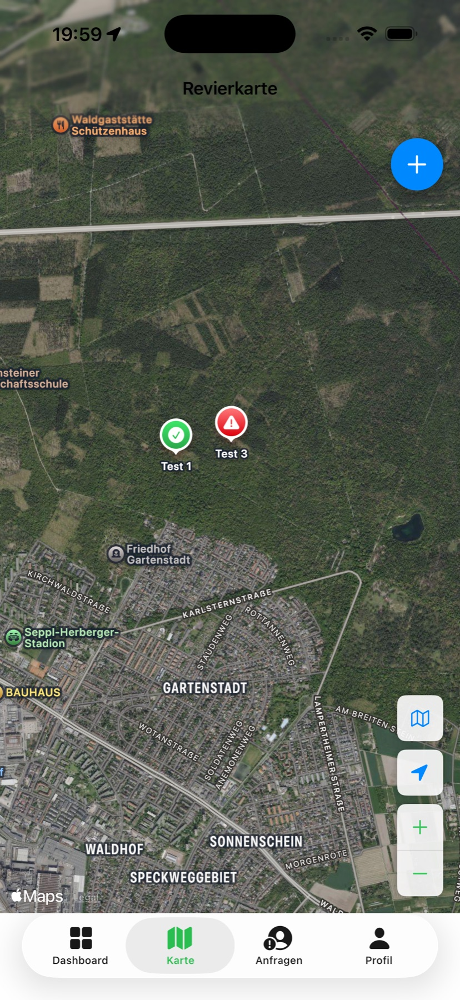

Wo liegt welche Kirrung?
Eine gemeinsame Kartenansicht macht Standorte für berechtigte Mitglieder direkt sichtbar.
Mobile App für iOS und Android · Revierorganisation
RevierHege bündelt Standorte, Status, Notizen und Änderungen in einer gemeinsamen Revieransicht. Entwickelt mit einer kleinen Pilotgruppe – für einen konkreten Ablauf im Jagdalltag.
Die Ausgangslage
Telefon, WhatsApp und Erinnerung reichten nicht immer aus, wenn eine kleine Gruppe dieselben Kirrungen betreute. RevierHege entstand aus dem Wunsch, den aktuellen Stand an einem Ort nachvollziehbar zu machen.
Eine gemeinsame Kartenansicht macht Standorte für berechtigte Mitglieder direkt sichtbar.
Der Status „voll“ oder „leer“ zeigt, wo eine Kontrolle oder Handlung ansteht.
Notizen und Historie schaffen Nachvollziehbarkeit, ohne Informationen erneut abzufragen.

Das entstandene Produkt
Der MVP wurde nicht als Funktionssammlung gebaut. Karte, Status, Notizen, Historie und Revierzugang bilden genau den Ablauf ab, den die Pilotgruppe gemeinsam organisieren wollte. Neben der erprobten iOS-Version befindet sich inzwischen auch eine Android-Version im Betatest.
Kirrungen anzeigen und direkt auf der Karte anlegen.
Aktuellen Zustand festhalten und Informationen ergänzen.
Änderungen innerhalb der Reviergruppe nachvollziehen.
Daten bleiben auf die jeweils freigegebene Gruppe begrenzt.
Einblicke in den MVP
Die Aufnahmen zeigen den getesteten Funktionsumfang: Status erfassen, Veränderungen nachvollziehen, Berechtigungen verwalten und alle Beteiligten auf demselben Stand halten.
Bild auswählen, um die Ansicht zu vergrößern.
Der Projektweg
Nicht die Menge der Funktionen war der Maßstab, sondern die Frage, was im Alltag hilft und ob daraus ein tragfähiges Produkt entstehen kann.
Ablauf, Rollen, Begriffe und Informationsbedarf mit der Pilotgruppe klären.
Einen engen MVP statt einer vollständigen Jagd-App definieren.
Die iOS-Version über TestFlight und die Android-Version im Betatest bereitstellen und mit Praxisfeedback verbessern.
Bedarf, bestehende Ersatzlösungen und Wettbewerbsumfeld außerhalb der Pilotgruppe prüfen.
Den kommerziellen Ausbau vorerst nicht weiterverfolgen.
Das Ergebnis
Ein funktionierender Pilot kann Nutzen bestätigen – ohne automatisch einen Markt zu beweisen.
RevierHege erfüllt den Anwendungsfall der Pilotgruppe. Die anschließende Marktvalidierung bestätigte jedoch nicht ausreichend, dass ein größerer kommerzieller Ausbau gegenüber vorhandenen Apps und etablierten Arbeitsweisen gerechtfertigt wäre.
Eine Android-Version erweitert den technischen Praxistest inzwischen auf eine zweite Plattform. Eine breitere Vermarktung ist aktuell weiterhin nicht geplant. Das Projekt bleibt eine Referenz für technische Umsetzung, Praxisvalidierung und eine begründete Produktentscheidung.
Übertragbare Methode
RevierHege zeigt, wie byte & Handwerk Produktideen behandelt: Arbeitsalltag verstehen, Annahmen begrenzen, unter realen Bedingungen prüfen und erst dann über Ausbau entscheiden.
Der beobachtete Ablauf bestimmt den ersten Umfang.
Echte Nutzung ersetzt Vermutungen durch Beobachtungen.
Ein begründetes Nein ist ein verwertbares Ergebnis.
Referenzprojekt von byte & Handwerk
Die vollständige Fallstudie beschreibt Ausgangsthese, Praxistest, Marktvalidierung und die Erkenntnisse für weitere digitale Piloten.